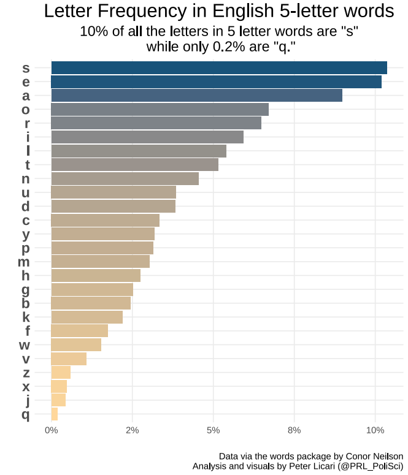
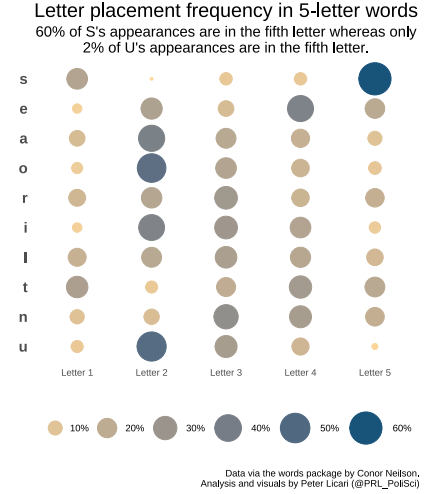

Best Wordle Seed
data visualization
These are a pair of visualizations I made once Wordle started getting big (before it was bought out by the New York Times). There are a few different approaches to determining the best Wordle seed: The one I went with was to use the scrabble dictionary to identify 5-letter English words and identify the most frequently occurring letters as well as where they tend to occur.


For what it’s worth, I still use the seeds I identified from this analysis. My streak may have been broken by toddlers, illnesses, and busted phones but it hasn’t been done-in by the game itself: My accuracy rating is still at 100%.